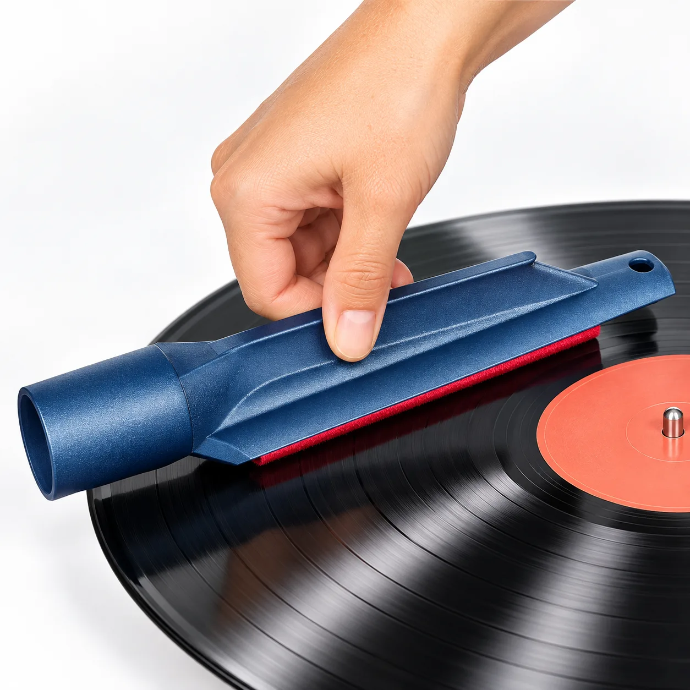
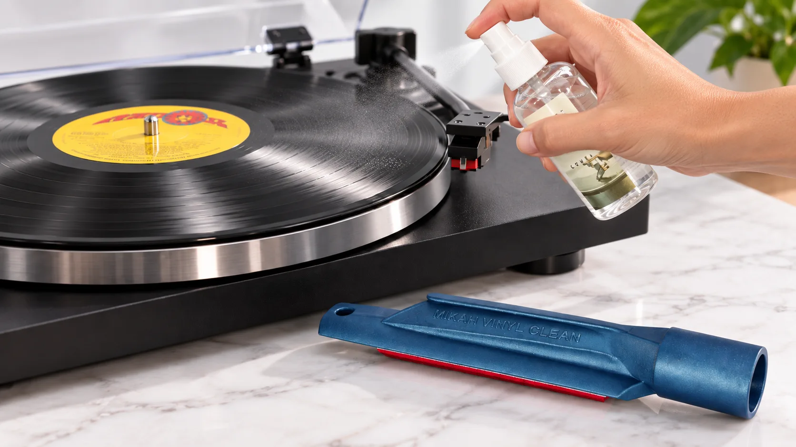
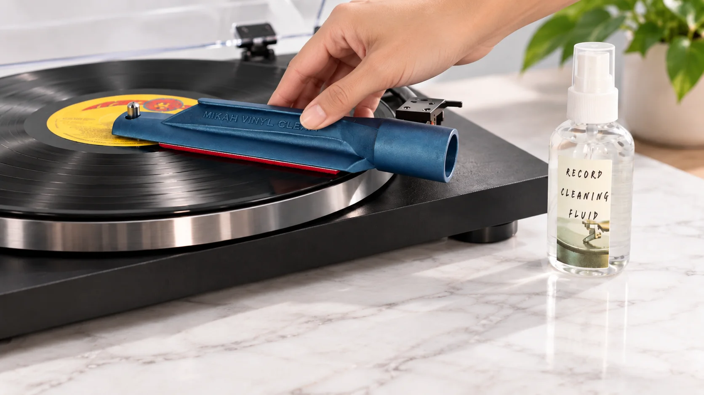

Loosen what a dry brush leaves behind
Cleaning fluid reaches the playing surface and helps release dust, oils and grime that can settle into the record grooves.
A compact vacuum vinyl record cleaner built for people who actually handle records — collectors, DJs, selectors and music curators. Wet clean the record, loosen the grime, then vacuum the dirty fluid away instead of leaving it behind.
Marketplace pricing and package contents can vary. Use the links above for current availability.

A dry record brush is useful for loose surface dust. A deeper clean needs another step: lift the grime with fluid and physically remove that contaminated fluid from the record. Mikah Vinyl Cleaner turns a turntable and vacuum hose into a compact vinyl record cleaning system without the size or price of a dedicated record cleaning machine.
Cleaning fluid reaches the playing surface and helps release dust, oils and grime that can settle into the record grooves.
The soft replaceable velvet pad sits against the vinyl while the turntable does the rotating work.
Connect a 1.5-inch vacuum hose and extract the cleaning fluid together with the contamination it has loosened.
Put the record on the turntable, apply cleaning fluid, position the cleaner so its guide hole sits on the turntable spindle, then connect the vacuum hose. The record rotates under the velvet surface while the vacuum draws the fluid away.
There is no bulky cabinet and no separate record-cleaning machine to store. The cleaner is compact enough for a record shelf, DJ setup or listening room and quick enough to use when a record needs more than a casual dusting.


The supplied record-cleaning fluid uses a special surfactant detergent . The Library of Congress documents a record-preservation workflow using a mild surfactant detergent solution, gentle brushing and vacuum drying, followed by a distilled-water rinse.
Mikah Vinyl Cleaner brings the same core idea — wet cleaning followed by vacuum removal — into a compact tool intended for everyday record collectors and working DJs.
Read the Library of Congress cleaning workflow →A vinyl collection can be an archive, a working library, or both. Mikah Vinyl Cleaner was built around that reality: records get handled, auditioned, played, moved and played again.
For new purchases, used-bin finds and older records that need a more complete clean than a dry surface brush can provide.
For people who treat records as working tools and want a compact cleaner that can live beside the turntable instead of taking over the room.
For anyone constantly evaluating music, preserving a library and hearing enough records to notice when surface contamination gets in the way.
Mikah Vinyl Cleaner came from a simple problem: finding a record-cleaning method that was highly effective, affordable and portable. A vacuum machine can do an excellent job, but not every collector or DJ wants another large piece of equipment. The cleaner was developed as a smaller route to the same basic idea — apply fluid, make controlled contact and remove the dirty liquid with suction.
The product sits naturally beside my work as Adam Bogdan, a Miami-based DJ and producer with more than two decades behind the decks. Records are part of the same ecosystem as DJ sets, music discovery and the curation work I do through Summerlandia. If you're new to the craft side, I also break down what a DJ set actually is and write about music, DJing and independent artist culture in From the Booth.
A vacuum record cleaner combines wet cleaning with suction. Cleaning fluid helps loosen contamination; the vacuum then removes that fluid from the record instead of allowing it to dry back onto the surface.
The guide hole at one end of the cleaner is positioned over the turntable spindle pin. The record rotates beneath the velvet pad while the cleaner remains guided in place.
The cleaner is designed for a 1.5-inch vacuum hose connection.
The supplied fluid uses a special surfactant detergent. The Library of Congress documents this surfactant detergent, gentle brushing and vacuum drying as part of its record-cleaning workflow.
Yes. The soft velvet pad is replaceable, and replacement pads and cleaning supplies can be purchased separately.
Mikah Vinyl Cleaner is made in Miami, Florida, USA.
Current packages, pricing and availability are listed on eBay and Etsy using the purchase buttons on this page.
Choose your preferred marketplace for current pricing, available packages, shipping and buyer protection.